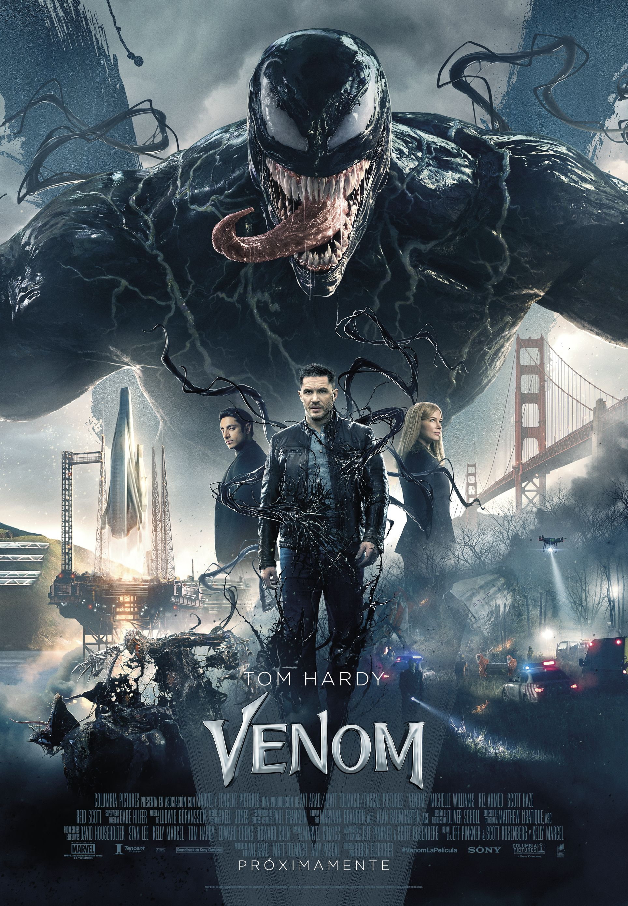

Peter Parker decide irse junto a MJ, Ned y el resto de sus amigos a pasar unas vacaciones a Europa. Sin
embargo, el plan de Parker por dejar de lado sus superpoderes durante unas semanas se ven truncados
cuando Nick Fury contacta con él para solicitarle ayuda para frenar el ataque de unas criaturas
elementales que están causando el caos en el continente. En ese momento, Parker vuelve a ponerse el
traje de Spider-Man para cumplir con su labor.
Venom
Duración (2h 20m)

Sínopsis:
Como periodista, Eddie Brock (Tom Hardy) lleva tiempo intentando desenmascarar al creador de la
Fundación Vida, el famoso genio científico Carlton Drake (Riz Ahmed), una obsesión que ha arruinado
su carrera y su relación con su novia, Anne (Michelle Williams). Al investigar uno de los
experimentos de Drake, el ente alienígena Venom se fusiona con el cuerpo de Eddie, y el reportero
adquiere de pronto nuevos e increíbles superpoderes, así como la oportunidad de hacer prácticamente
lo que se le antoje. Retorcido, oscuro, impredecible e impulsado por la cólera, Venom obliga a Eddie
a luchar por controlar unas habilidades sumamente peligrosas que, al mismo tiempo, también resultan
embriagadoras y le hacen sentir poderoso. Dado que Eddie y Venom se necesitan mutuamente para
conseguir lo que quieren, se van entremezclando cada vez más... ¿Dónde acaba Eddie y empieza Venom?
Calificación:
6.7⭐
4/10/2018